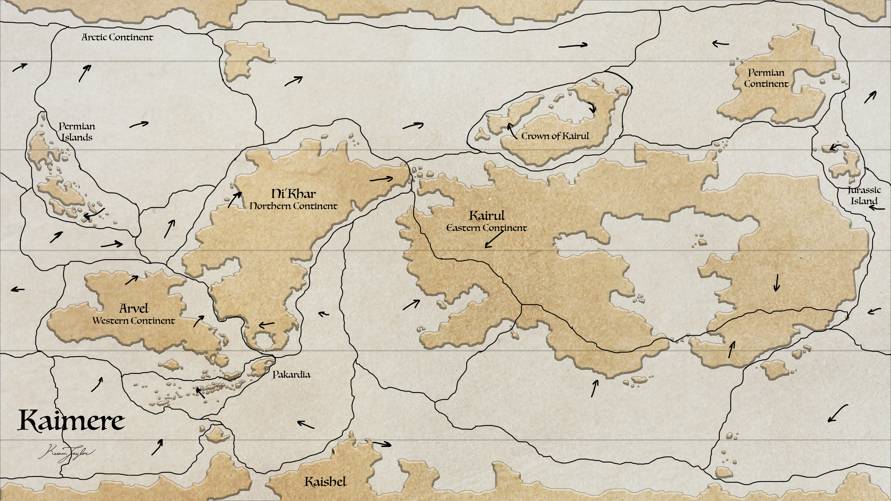
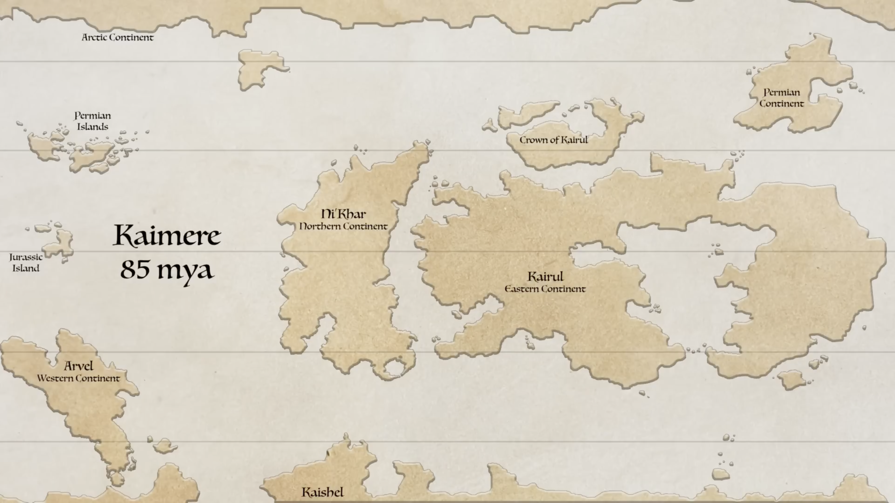
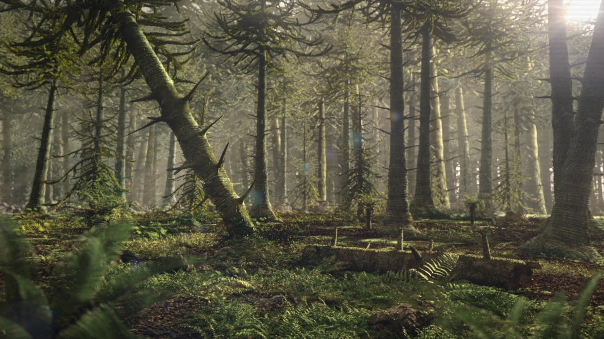
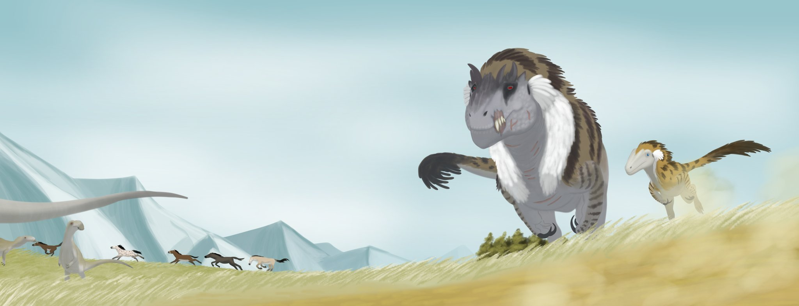

01 · INTRODUCTION
Overview

Arvel is a major continent of Kaimere, extending approximately 7,000 miles across the planet's southern and western hemispheres. It occupies a geographically and ecologically significant position within the Known World, bordered by the Sun-Eater Ocean to the west and the Trakaiam Sea and associated continental and island regions to the east. Its extensive landmass, considerable latitudinal range, and pronounced topographic variation support a diverse assemblage of terrestrial and freshwater environments, ranging from humid tropical forests to semiarid grasslands and desert regions.
The continent's physical geography is dominated by the Arvelith Highlands, a massive mountain system that traverses the interior and separates the humid northern and eastern regions from the generally drier south and west. Elevations along the range frequently reach 6 — 7 kilometres, producing substantial orographic effects on atmospheric circulation and precipitation. The resulting climatic differentiation is a principal determinant of Arvel's ecological organization, influencing the distribution of vegetation, the availability of freshwater, and the geographical ranges of its fauna.
Northern and central Arvel is particularly notable for its extensive tropical and subtropical forest systems, including the Arvelith Titan Gardens, a complex of open-canopy tropical woodlands maintained in part by the activities of massive herbivores. Further north, humid conditions support extensive closed jungle environments, including the Beastfolk Jungle. South of the highlands, the Arvelith Steppes form a broad region of productive grasslands, savannas, and riparian corridors, while the western interior transitions into more arid environments. These regional divisions are not absolute; local topography, drainage networks, and proximity to marine environments generate considerable variation within the continent's principal climatic zones.
Arvel is also important to the biogeography of Kaimere. Its size and environmental diversity provide opportunities for geographical isolation, ecological specialization, and the coexistence of organisms originating from different geological periods of Earth's history. The continent's proximity to the Portal-influenced ecosystems of the Known World further contributes to the complexity of its biological communities. Consequently, Arvel's modern ecosystems reflect the combined effects of climatic conditions, geographical barriers, evolutionary history, and the ecological interactions of introduced organisms.
02 · History on Kaimere
Geological History and Tectonic Setting

The geological history of Arvel provides the foundation for its present topography, drainage systems, and regional environmental differences. Its most conspicuous physical feature is the Arvelith Highlands, whose exceptional elevation and considerable length exert a continent-wide influence on climate and hydrology. The development of this mountain system, together with the formation of the continental margins and major lowland basins, represents a central component of Arvel's geological evolution.
In modern Kaimere, Arvel is on a trajectory to crash into Ni'Khar. It has technically already done so and for quite some time as much of the Trakaiam is a continental plate mostly stemming from Ni'Khar. The inland sea is expected to subduct under Arvel within the next twenty million years or so.

However, back during the second Mesozoic Dynasty, Arvel was part of a supercontinent encompassing what is now also Kaishel, Pakardia, and the Khalin islands. This continent was still mostly polar but part of it was quite far north into the temperate zone. This portion was Arvel, in the process of breaking free. Though it would not break free entirely until eighty million years ago, but a hundred fifteen million years ago, what is now western Arvel was connected by a short land bridge to eastern Kairul. This land bridge was only to be present for as brief as five million years early in the during the second Mesozoic Dynasty before the southern continent continued its clockwise rotation.

Around 85 million years ago Kaishel truly began to break apart. Arvel wouldn't break off for another 5 million years, but the continent was churning out a lot of volcanism, it is not known if this caused the end of the Dynasty but like the transition between the last two dynasties, the marker between third and fourth Mesozoic Dynasties is tenuous. From that point forward, Arvel would drift northward.
Modern Arvel encompasses a large and topographically varied landmass characterized by extensive lowlands, elevated interior terrain, dissected mountain slopes, and irregular coastal margins. Its broad geographical extent allows considerable differences in geological conditions between regions. The western interior, northern and eastern lowlands, southern grasslands, and mountainous central regions are likely to differ in substrate composition, soil development, erosion rates, and sediment accumulation. The present configuration of the continent reflects a long history of geological processes, although the chronology of its formation and the arrangement of its underlying tectonic plates remain to be established in the current geographical record. Accordingly, the precise timing of continental assembly, crustal deformation, and changes in the surrounding ocean basins cannot yet be specified.
The Arvelith Highlands constitute the dominant topographic feature of the continent. Reaching elevations of approximately 6 — 7 kilometres across substantial portions of the range, the highlands form a major physical barrier between the northern and eastern regions and the southern and western interior. Mountains of this scale influence the surrounding landscape through several processes. Orographic uplift increases precipitation on windward slopes, while high elevations generate cooler conditions and substantial vertical differences in temperature and moisture availability. Precipitation and snow accumulation at the highest elevations, where climatic conditions permit, may contribute to headwater formation and seasonal variation in downstream river discharge. The highlands also influence biological distributions by restricting dispersal between adjacent lowland regions. Mountain passes, valleys, and foothill corridors may provide routes for movement, whereas high ridges and exposed alpine environments can limit the distribution of organisms adapted to warmer lowland habitats. Over geological timescales, such barriers can promote population isolation and regional diversification. The precise tectonic origin of the Arvelith Highlands remains dependent on a more detailed reconstruction of Arvel's geological history. Their present-day effects on climate, hydrology, and biogeography, however, are evident from their geographical position and elevation.
Arvel's extensive elevation gradients provide conditions for substantial erosion and sediment transport. In mountainous regions, physical weathering, runoff, and mass movement transfer material from steep slopes into adjacent valleys and lowlands. Rivers subsequently redistribute these sediments, depositing them in floodplains, alluvial basins, and coastal environments. The intensity and character of these processes vary geographically. Humid regions experience comparatively sustained chemical weathering and runoff, while arid environments may be characterized by episodic but locally intense erosion during rainfall events. Vegetation influences both processes by stabilizing soils, intercepting precipitation, and modifying surface runoff. These processes are especially relevant to the development of the Arvelith Steppes. Where rivers emerging from the highlands deposit nutrient-bearing sediments across broad plains, the resulting alluvial environments may support productive vegetation and substantial concentrations of grazing animals. Conversely, regions receiving limited sediment and freshwater inputs may develop thinner soils and more restricted plant communities.
The relationship between geology and ecology is expressed through the distribution of elevation, soil properties, drainage, and natural barriers. Variations in bedrock and sediment composition influence nutrient availability, while differences in slope and drainage affect soil moisture and vegetation structure. The highlands are therefore significant not only as a climatic boundary but also as a source of environmental heterogeneity. Their slopes, valleys, foothills, and adjoining plains create numerous habitats within relatively short geographical distances. These differences provide opportunities for ecological specialization and contribute to the diversity of Arvel's biological communities. A more complete geological account will require the establishment of the continent's tectonic history, major geological periods, and the chronology of its principal mountain-building events.
03 · Rocks and Biomes
Physical Geography and Landscapes
Arvel's physical geography is organized around the contrast between its mountainous interior and the lowlands extending toward the northern, eastern, southern, and western margins. The Arvelith Highlands divide the continent into broad environmental regions, while smaller mountain systems, river basins, peninsulas, and coastal formations introduce additional variation.
Northern Arvel includes extensive lowland regions situated within the warmer latitudes of the planet. Its geographical position and relationship to the surrounding marine environment favor humid conditions across substantial areas, particularly where prevailing winds transport moisture inland. The northern lowlands contain tropical and other moisture-dependent environments, including extensive forest systems. Their ecological characteristics vary according to elevation, drainage, and proximity to the coast. River valleys and floodplains provide corridors of freshwater habitat, while poorly drained depressions may support wetlands and seasonally inundated forests. The northern region also lies adjacent to the broader continental interior and the Trakaiam Sea system. This position is significant for the movement of moisture, the distribution of coastal and inland habitats, and the dispersal of terrestrial organisms between neighboring regions.

Central Arvel is characterized by comparatively humid conditions and extensive forested landscapes. Its relationship with the Trakaiam Sea and the atmospheric circulation associated with that marine basin contributes to the availability of moisture across much of the region. Among its most distinctive environments are the Titan Gardens, open-canopy forest systems in which large herbivores play an important role in maintaining vegetation structure. These landscapes differ from closed-canopy tropical forests in the distribution of trees, the abundance of open ground, and the extent of sunlight reaching the lower vegetation layers. The most eastern regions contains the Beastfolk Jungle and other humid closed forest environments. Differences in elevation, drainage, soil conditions, and disturbance regimes create a heterogeneous landscape in which closed forests, open woodlands, riparian vegetation, and other habitat types may occur in close proximity. The ecological distinction between the eastern forests and the drier southern interior is particularly pronounced near the Arvelith Highlands, where topography and atmospheric circulation jointly influence the regional distribution of precipitation.
The Arvelith Highlands extend across the interior of Arvel and constitute its principal geographical division. Their high elevations produce cooler environments than those of the surrounding lowlands, while their slopes generate substantial differences in precipitation between windward and leeward exposures. The highlands comprise multiple ecological zones. Lower slopes may support forest and woodland communities, depending on moisture availability, while higher elevations experience progressively cooler conditions and potentially more exposed, sparsely vegetated environments. The precise distribution of these zones depends on local elevation, aspect, wind exposure, and precipitation. The foothills form a transition between mountainous terrain and adjacent lowlands. These regions are particularly important for drainage and sediment transport, as rivers originating in the highlands descend into wider valleys and plains. They also provide potential corridors for animal movement between otherwise distinct lowland ecosystems.

South of the Arvelith Highlands lie the Arvelith Steppes, an extensive region of grasslands and associated open landscapes. Their comparatively dry climate reflects the influence of the highlands on atmospheric moisture transport, together with the broader circulation patterns affecting southern Arvel. The steppes contain perennial grasslands, riparian corridors, and pine savannas, alongside alluvial plains associated with major drainage systems. This combination of open terrestrial habitats and localized freshwater resources supports a productive grazing ecosystem. The distribution of vegetation is likely to vary according to soil moisture, seasonal precipitation, fire regimes, and the intensity of herbivory. Grasslands may dominate relatively exposed and well-drained plains, while trees and shrubs become more abundant along rivers and in areas receiving greater moisture. Where large herbivores suppress woody regeneration or repeatedly disturb vegetation, open-canopy habitats may persist even where climatic conditions could otherwise support denser woodland. The steppes are therefore not uniform grassland expanses but a regional mosaic of vegetation communities maintained by the interaction of climate, soils, hydrology, and animal activity.

Western Arvel faces the Sun-Eater Ocean and includes extensive arid and semiarid environments called the Timugai Badlands. Its climatic conditions contrast with the humid forests of central and northern Arvel, reflecting the influence of the Arvelith Highlands and the regional atmospheric circulation. The western interior contains desert landscapes and other moisture-limited environments. Their distribution is influenced by precipitation, surface drainage, soil characteristics, and the availability of groundwater. Where permanent water is scarce, vegetation is generally concentrated in locations with favorable soil moisture, such as drainage channels, springs, and seasonally flooded depressions. The coastal margin may contain environments that differ from those of the interior. Marine humidity, local wind patterns, and coastal currents can modify temperature and moisture conditions, although their precise effects depend on the direction and seasonal behavior of the prevailing circulation. The western region's aridity creates a substantial ecological filter. Organisms occupying these environments must contend with limited freshwater availability, high evaporative demand, and potentially large differences between exposed daytime conditions and nighttime temperatures. Species distributions are consequently likely to be more strongly associated with permanent water sources and localized favorable habitats than in the wetter parts of the continent.

Southern Arvel is dominated by semiarid environments, including grasslands and transitional landscapes associated with the Arvelith Steppes. Its climate is influenced by the rain-shadow effects of the highlands, although local variation in topography and drainage produces differences in habitat availability. The Qajar Peninsula extends from the southern part of the continental region and is associated with the Celestial Wall, a major geographical barrier that restricts movement through the surrounding landscape. The wall's precise geological nature and extent should be described separately once its physical characteristics have been established. As a geographical barrier, the Celestial Wall is significant for regional connectivity. Depending on the availability of passes, corridors, and routes around its margins, it may restrict the movement of terrestrial organisms and human populations while concentrating dispersal through a limited number of accessible locations. The peninsula's coastal and interior environments may also differ in moisture availability and temperature. Their detailed classification will depend on the regional climate map and the relationship between the peninsula, adjacent seas, and surrounding topography.
04 · The Impact of Weather
Climate and Atmospheric Circulation

Arvel's climate reflects the interaction of Kaimere's generally warm global conditions with regional atmospheric circulation, marine influences, and pronounced topographic barriers. Although the continent extends across a substantial geographical area, its principal climatic divisions are strongly associated with the Arvelith Highlands, which separate the wetter northern and eastern regions from the drier southern and western interior.
Kaimere experiences a warmer global climate than modern Earth. Equatorial ocean surface temperatures commonly reach approximately 90 — 95°F, compared with roughly 82°F in Earth's present-day equatorial waters. These elevated temperatures provide a substantial source of heat and atmospheric moisture, particularly across tropical and subtropical marine environments. Arvel's climate is nevertheless not uniformly hot or humid. Latitude, elevation, prevailing winds, precipitation, and oceanic influences produce significant regional differences. The highlands support cooler conditions than the surrounding lowlands, while the western and southern interiors experience comparatively dry climates. The continent's large geographical extent also permits regional differences in seasonality. The precise timing and intensity of wet and dry periods depend on the seasonal movement of atmospheric circulation systems and their interaction with local topography.
Atmospheric circulation determines the pathways by which heat and water vapor are transported across Arvel. The prevailing winds shown on the continental circulation maps indicate the broad directions of atmospheric movement, while the positions of the major landmasses and mountain systems determine how these flows interact with the terrain. Moisture-bearing winds moving inland from marine environments can supply precipitation to coastal regions and adjacent lowlands. As air masses encounter the Arvelith Highlands, forced ascent promotes cooling and condensation, increasing precipitation on exposed slopes. The distribution of moisture across the continent consequently depends not only on distance from the sea but also on the direction of the prevailing winds. Regions receiving persistent onshore moisture transport may remain humid even at considerable distances inland, whereas locations sheltered by mountain barriers may experience substantially lower precipitation. The distinction between windward and leeward environments is particularly important when interpreting Arvel's transition from humid eastern forests to the semiarid southern and western regions.
The Arvelith Highlands exert a major influence on continental precipitation through orographic uplift. When moisture-bearing air encounters the mountain slopes, it is forced to rise. Cooling during ascent encourages condensation and precipitation, removing part of the air mass's moisture before it crosses the range. As air descends on the leeward side, it undergoes compression and warming. Relative humidity consequently decreases, reducing the likelihood of further precipitation. This process contributes to the rain shadow affecting southern and western Arvel. The resulting pattern helps explain the geographical association between humid eastern environments and the drier Arvelith Steppes and western interior. The strength of the effect varies according to the direction of incoming winds, the elevation and orientation of the mountains, and the moisture content of the air mass. The rain shadow should not be interpreted as a complete barrier to precipitation. Seasonal changes in wind direction, local convection, and the passage of weather systems can still produce rainfall in otherwise dry regions. Rivers originating in wetter mountainous areas may also sustain productive habitats far into the semiarid interior.
The Trakaiam Sea is an important source of atmospheric moisture and a major influence on eastern Arvel's climate. Its extensive surface area allows substantial interaction between the ocean and atmosphere, while the circulation of warm water distributes heat across the marine basin. Evaporation supplies water vapor to the lower atmosphere, which may subsequently be transported over neighboring landmasses. The extent to which this moisture reaches inland environments depends on prevailing winds and the topographic barriers encountered along its route. The sea also moderates temperatures in adjacent coastal regions. Marine environments generally experience smaller short-term temperature fluctuations than continental interiors, although the degree of moderation depends on local circulation and the characteristics of the coast. These processes contribute to the contrast between the humid eastern regions and the more continental environments farther west and south. They also establish a direct connection between marine circulation and terrestrial ecosystem productivity.
05 · River and Highland Impact
Hydrology and Oceanographic Influences
Arvel's hydrology is closely connected to its topography and regional precipitation patterns. The Arvelith Highlands form an important source of runoff, while the contrast between humid and arid regions determines how water is distributed across the continent. The surrounding marine environments, particularly the Trakaiam Sea, further influence coastal conditions and the movement of nutrients between terrestrial and aquatic ecosystems.
The highlands provide elevated terrain from which surface water can flow into surrounding lowlands. Precipitation falling on mountain slopes contributes to runoff, soil infiltration, and groundwater recharge. The resulting drainage networks transport water and sediment into valleys, plains, and coastal basins. The amount of water entering these systems depends on precipitation, evaporation, vegetation cover, soil permeability, and seasonal variability. Humid regions generally support more persistent surface drainage, whereas rivers in arid environments may be intermittent or highly dependent on rainfall in distant headwater regions. This distinction is ecologically important. A river that originates in a humid mountain region may maintain a permanent freshwater corridor through an otherwise dry landscape. Such corridors provide water, forage, and sheltered habitat, supporting concentrations of organisms that would be unable to persist in the surrounding environment.
Rivers modify the landscapes through which they flow by transporting sediment and redistributing nutrients. In mountainous terrain, steep gradients favor erosion and relatively rapid transport. As rivers enter lower-gradient plains, flow velocity may decrease, encouraging sediment deposition and the formation of alluvial environments. Floodplains are particularly important in regions where seasonal inundation replenishes soils and redistributes organic material. Flooding can create a shifting mosaic of aquatic habitats, wetlands, grasslands, and wooded corridors, with the precise distribution determined by flood frequency and local drainage. In the Arvelith Steppes, riparian environments are significant components of the broader grassland ecosystem. Their comparatively reliable water supplies allow vegetation to persist through dry periods, while the surrounding plains provide extensive grazing habitat. This contrast can produce strong spatial variation in animal density and movement.
In western and southern Arvel, the availability of freshwater is likely to be an important determinant of ecological distribution. Where rainfall is insufficient to sustain permanent surface drainage, groundwater may provide a more reliable source of moisture. Groundwater can emerge at springs, collect in depressions, or sustain localized vegetation through dry periods. Such sites may support distinctive plant communities and provide essential resources for terrestrial fauna. The extent and accessibility of groundwater depend on geological substrate, recharge rates, and the structure of underground aquifers. These factors should be considered when describing the distribution of desert and semiarid species, particularly those that require regular access to drinking water or moist refuges.
The Trakaiam Sea is a shallow inland marine basin approximately 2,000 miles across. Its extensive area of shallow water supports a highly connected aquatic environment in which seagrass meadows, reef complexes, and deeper channels form major ecological components. Marine circulation redistributes heat, nutrients, and suspended material throughout the basin. The movement of water also affects salinity, water clarity, and the exchange of organisms between different parts of the sea. Because much of the basin is shallow, interactions between the water column and the seabed are especially important to its ecological functioning. The seagrass-dominated environments of the Trakaiam Sea provide extensive habitat and food resources for herbivorous organisms. These productive marine communities support a diverse assemblage of aquatic fauna and contribute to the broader ecological importance of the Known World. The sea also influences the surrounding continent through evaporation and the transfer of heat between ocean and atmosphere. Its marine and terrestrial effects should therefore be considered together when examining eastern Arvel's climate and ecological productivity.
Arvel's coastal regions connect continental drainage systems with the surrounding oceans and seas. Rivers deliver freshwater, sediment, and terrestrial organic material to coastal waters, while tides and marine currents redistribute these materials along the shoreline. Estuaries and river mouths form transitional environments in which salinity and water levels vary ccording to freshwater discharge and marine conditions. Where suitable topography and sediment supplies occur, these environments may support wetlands and other productive coastal habitats. Marine circulation can also influence the dispersal of aquatic organisms, particularly species with planktonic or otherwise dispersive early life stages. Currents may connect distant coastal populations or limit dispersal across unfavorable stretches of water. Offshore islands may consequently support distinctive assemblages of organisms when colonization is infrequent and subsequent isolation persists.
The distribution of water across Arvel links its physical geography to its biological communities. The highlands generate runoff and create precipitation gradients; rivers sustain productive corridors through drier regions; and the surrounding marine environments influence both coastal climates and aquatic productivity. These relationships establish several important ecological patterns. First, permanent water sources can concentrate terrestrial fauna in otherwise water-limited environments. Second, floodplains and alluvial plains can sustain productive vegetation that supports large herbivore populations. Third, marine currents and coastal circulation influence the availability of resources and the movement of aquatic organisms. Hydrology therefore functions not merely as a background geographical feature but as a major organizing factor in Arvel's ecosystems. Its effects interact with climate, geology, vegetation, and animal behavior to determine where organisms can survive and how biological communities are structured.